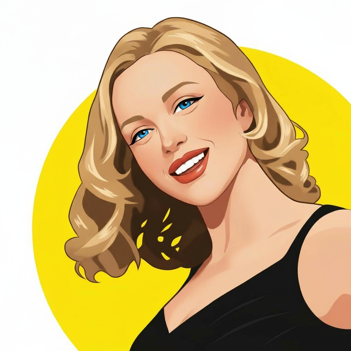
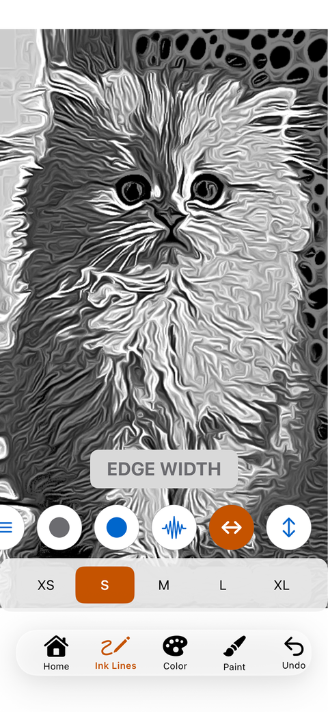
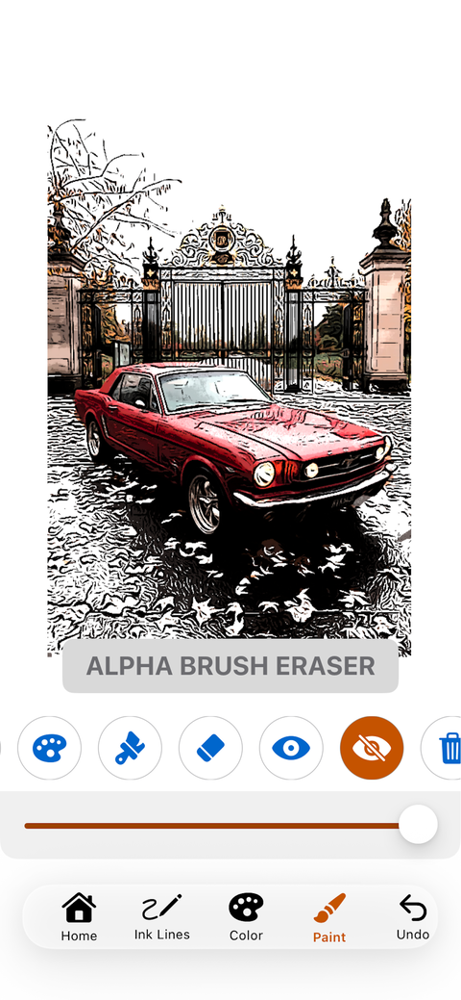

Insatiable Genius
ToonPAINT
Photos and video, drawn as ink, pencil, and paint.
ToonPAINT turns a photograph into line art you can tune, color, and paint by hand. No AI, just your art. We do not guess what the picture should look like. The lines come from the photograph and are repeatable.
We release ToonPaint through our company, Insatiable Genius. The first iPhone version shipped in 2010. The current app is rebuilt for iOS 17 and later, on iPhone and iPad. A pencil filter sits beside the ink engine. ToonPAINT Premium applies both looks across the frames of a video and exports it at high resolution, with the original sound kept. The same rule holds for the moving picture: no AI, just your art in motion.
What it does
- Ink and pencil engines for photos, and for video with Premium.
- Edge length from XS to XL, plus coherence and black level.
- Color modes for cartoon, the original photo, one color, or white, with brightness and saturation.
- A paint studio: brushes, a color picker, and an eraser that can clear paint without wiping the lines.
- High-resolution export, import from the Photos share sheet, and sessions that save themselves.
People use it for line-art studies, car illustrations, pet portraits, and any drawing that should stay tied to a real photograph. Premium is the subscription for video and the newer modes: $0.99 a month or $9.99 a year in the U.S. store. Current price and terms are on the App Store.
In the app


The same picture, different settings
These are still photographs. Each clip keeps the source beside the ink and the pencil while the controls step through their range.
On video
Premium draws the ink and pencil looks across the frames of a moving picture.